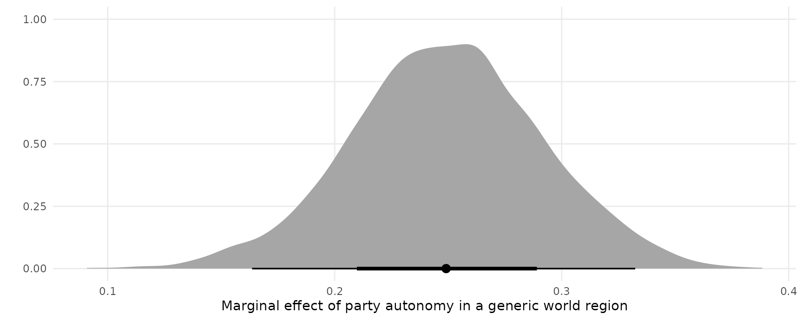

Support for brms is only available in the development version of marginaleffects:
Bug reports and feature requests can be submitted here: https://github.com/vincentarelbundock/marginaleffects/issues
Logistic regression with multiplicative interactions
Load libraries and download data on passengers of the Titanic from the Rdatasets archive:
library(brms)
library(marginaleffects)
library(ggplot2)
library(ggdist)
dat <- read.csv("https://vincentarelbundock.github.io/Rdatasets/csv/carData/TitanicSurvival.csv")
dat$survived <- ifelse(dat$survived == "yes", 1, 0)
dat$woman <- ifelse(dat$sex == "female", 1, 0)Fit a logit model with a multiplicative interaction:
Adjusted predictions
We can compute adjusted predicted values of the outcome variable (i.e., probability of survival aboard the Titanic) using the predictions function. By default, this function calculates predictions for each row of the dataset:
pred <- predictions(mod)
head(pred)
#> rowid type predicted survived woman age passengerClass conf.low
#> 1 4 response 0.9366733 1 1 29.0000 1st 0.9076870
#> 2 5 response 0.8500358 1 0 0.9167 1st 0.7532004
#> 3 6 response 0.9420371 0 1 2.0000 1st 0.8995553
#> 4 7 response 0.5132422 0 0 30.0000 1st 0.4286223
#> 5 8 response 0.9374943 0 1 25.0000 1st 0.9080379
#> 6 9 response 0.2729973 1 0 48.0000 1st 0.2014092
#> conf.high
#> 1 0.9615507
#> 2 0.9261213
#> 3 0.9732913
#> 4 0.5950052
#> 5 0.9621064
#> 6 0.3482536To visualize the relationship between the outcome and one of the regressors, we can plot conditional adjusted predictions with the plot_cap function:
plot_cap(mod, condition = "age")
Compute adjusted predictions for some user-specified values of the regressors, using the newdata argument and the typical function:
pred <- predictions(mod, newdata = typical(woman = 0:1, passengerClass = c("1st", "2nd", "3rd")))
pred
#> rowid type predicted age woman passengerClass conf.low conf.high
#> 1 4 response 0.51493135 29.88113 0 1st 0.43069174 0.5974527
#> 2 5 response 0.93640805 29.88113 1 1st 0.90820520 0.9621863
#> 3 6 response 0.20155092 29.88113 0 2nd 0.15034522 0.2589677
#> 4 7 response 0.77803472 29.88113 1 2nd 0.71292779 0.8351691
#> 5 8 response 0.08768375 29.88113 0 3rd 0.06405019 0.1140242
#> 6 9 response 0.57183184 29.88113 1 3rd 0.49816897 0.6474556The get_posterior_draws function samples from the posterior distribution of the model, and produces a data frame with drawid and draw columns.
pred <- get_posterior_draws(pred)
head(pred)
#> type drawid draw rowid predicted age woman passengerClass
#> 1 response 1 0.53428312 4 0.51493135 29.88113 0 1st
#> 2 response 1 0.94303022 5 0.93640805 29.88113 1 1st
#> 3 response 1 0.19753119 6 0.20155092 29.88113 0 2nd
#> 4 response 1 0.78030300 7 0.77803472 29.88113 1 2nd
#> 5 response 1 0.06949785 8 0.08768375 29.88113 0 3rd
#> 6 response 1 0.51869150 9 0.57183184 29.88113 1 3rd
#> conf.low conf.high
#> 1 0.43069174 0.5974527
#> 2 0.90820520 0.9621863
#> 3 0.15034522 0.2589677
#> 4 0.71292779 0.8351691
#> 5 0.06405019 0.1140242
#> 6 0.49816897 0.6474556This “long” format makes it easy to plots results:
ggplot(pred, aes(x = draw, fill = factor(woman))) +
geom_density() +
facet_grid(~ passengerClass, labeller = label_both) +
labs(x = "Predicted probability of survival", y = "", fill = "Woman")
Marginal effects
Use marginaleffects() to compute marginal effects (slopes of the regression equation) for each row of the dataset, and use summary() to compute “Average Marginal Effects”, that is, the average of all observation-level marginal effects:
mfx <- marginaleffects(mod)
summary(mfx)
#> Average marginal effects
#> type Term Effect 2.5 % 97.5 %
#> 1 response age -0.005226 -0.008026 -0.002593
#> 2 response passengerClass2nd 0.021046 -0.029505 0.073197
#> 3 response passengerClass3rd -0.129356 -0.168000 -0.091877
#> 4 response woman 0.365026 0.288124 0.443183
#>
#> Model type: brmsfit
#> Prediction type: responseCompute marginal effects with some regressors fixed at user-specified values, and other regressors held at their means:
marginaleffects(mod, newdata = typical(woman = 1, passengerClass = "1st"))
#> rowid type term dydx conf.low conf.high
#> 1 1 response woman 0.1564384432 0.108747391 0.2090786176
#> 2 1 response age -0.0002115047 -0.001407168 0.0008736017
#> 3 1 response passengerClass2nd -0.1570875383 -0.220020905 -0.1034390761
#> 4 1 response passengerClass3rd -0.3637840492 -0.437105119 -0.2945856754
#> age woman passengerClass
#> 1 29.88113 1 1st
#> 2 29.88113 1 1st
#> 3 29.88113 1 1st
#> 4 29.88113 1 1stCompute and plot conditional marginal effects:
plot_cme(mod, effect = "woman", condition = "age")
The get_posterior_draws produces a dataset with drawid and draw columns:
draws <- get_posterior_draws(mfx)
dim(draws)
#> [1] 16736000 12
head(draws)
#> type drawid draw rowid term dydx conf.low
#> 1 response 1 0.13975663 1 woman 0.1531783137 0.106558865
#> 2 response 1 0.07255033 1 passengerClass3rd -0.3632035780 -0.434582756
#> 3 response 1 0.04051404 1 passengerClass2nd -0.1568712503 -0.219518485
#> 4 response 1 0.66645965 1 age -0.0002108967 -0.001383808
#> 5 response 1 0.12355110 2 woman 0.1342385675 0.028832467
#> 6 response 1 0.70840365 2 passengerClass2nd -0.2721591149 -0.362045867
#> conf.high survived woman age passengerClass
#> 1 0.2050899334 1 1 29.0000 1st
#> 2 -0.2941780075 1 1 29.0000 1st
#> 3 -0.1035530086 1 1 29.0000 1st
#> 4 0.0008879305 1 1 29.0000 1st
#> 5 0.2866164197 1 0 0.9167 1st
#> 6 -0.1850855038 1 0 0.9167 1stWe can use this dataset to plot our results. For example, to plot the posterior density of the marginal effect of age when the woman variable is equal to 0 or 1:
mfx <- marginaleffects(mod,
variables = "age",
newdata = typical(woman = 0:1)) |>
get_posterior_draws()
ggplot(mfx, aes(x = draw, fill = factor(woman))) +
stat_halfeye(slab_alpha = .5) +
labs(x = "Marginal Effect of Age on Survival",
y = "Posterior density",
fill = "Woman")
Random effects model
Andrew Heiss publishes a ton of useful resources on statistics in R on his website. In this section, I replicate his analysis of a random effects model published in this post: “A guide to correctly calculating posterior predictions and average marginal effects with multilievel Bayesian models.” My goal is only to illustrate the use of marginaleffects. Please refer to the original post for a detailed discussion of the quantities computed below.
Load libraries and clean data:
remotes::install_github("vdeminstitute/vdemdata")
library(vdemdata)
library(tidyverse)
library(marginaleffects)
library(brms)
library(ggdist)
library(patchwork)
vdem_2015 <- vdem %>%
select(country_name, country_text_id, year, region = e_regionpol_6C,
media_index = v2xme_altinf, party_autonomy_ord = v2psoppaut_ord,
polyarchy = v2x_polyarchy, civil_liberties = v2x_civlib) %>%
filter(year == 2015) %>%
mutate(party_autonomy = party_autonomy_ord >= 3,
party_autonomy = ifelse(is.na(party_autonomy), FALSE, party_autonomy)) %>%
mutate(region = factor(region,
labels = c("Eastern Europe and Central Asia",
"Latin America and the Caribbean",
"Middle East and North Africa",
"Sub-Saharan Africa",
"Western Europe and North America",
"Asia and Pacific")))Fit a basic model:
mod <- brm(
bf(media_index ~ party_autonomy + civil_liberties + (1 | region),
phi ~ (1 | region)),
data = vdem_2015,
family = Beta(),
control = list(adapt_delta = 0.9),
cores = 4,
seed = 12345)Posterior predictions
To compute posterior predictions for specific values of the regressors, we use the newdata argument and the typical function. We also use the type argument to compute two types of predictions: accounting for residual (observation-level) residual variance (prediction) or ignoring it (response).
pred <- predictions(mod,
type = c("response", "prediction"),
newdata = typical(party_autonomy = c(TRUE, FALSE),
civil_liberties = .5,
region = "Middle East and North Africa"))
pred
#> rowid type predicted party_autonomy civil_liberties
#> 1 7 response 0.6219782 TRUE 0.5
#> 2 8 response 0.3692581 FALSE 0.5
#> 3 7 prediction 0.6346563 TRUE 0.5
#> 4 8 prediction 0.3460664 FALSE 0.5
#> region conf.low conf.high
#> 1 Middle East and North Africa 0.53185729 0.7137691
#> 2 Middle East and North Africa 0.28664282 0.4627307
#> 3 Middle East and North Africa 0.24456762 0.9641604
#> 4 Middle East and North Africa 0.01711525 0.7334999Extract posterior draws and plot them:
pred <- get_posterior_draws(pred)
ggplot(pred, aes(x = draw, fill = party_autonomy)) +
stat_halfeye(alpha = .5) +
facet_wrap(~ type) +
labs(x = "Media index (predicted)",
y = "Posterior density",
fill = "Party autonomy")
Marginal effects and contrasts
As noted in the Marginal Effects vignette, there should be one distinct marginal effect for each combination of regressor values. Here, we consider only one combination of regressor values, where region is “Middle East and North Africa”, and civil_liberties is 0.5. Then, we calculate the mean of the posterior distribution of marginal effects:
mfx <- marginaleffects(mod,
newdata = typical(civil_liberties = .5,
region = "Middle East and North Africa"))
mfx
#> rowid type term dydx conf.low conf.high
#> 1 1 response party_autonomyTRUE 0.2516837 0.1666480 0.3291001
#> 2 1 response civil_liberties 0.8153653 0.6302967 1.0045474
#> party_autonomy civil_liberties region
#> 1 TRUE 0.5 Middle East and North Africa
#> 2 TRUE 0.5 Middle East and North AfricaUse the get_posterior_draws() to extract draws from the posterio distribution of marginal effects, and plot them:
mfx <- get_posterior_draws(mfx)
ggplot(mfx, aes(x = draw, y = term)) +
stat_halfeye() +
labs(x = "Marginal effect", y = "")
Plot marginal effects, conditional on a regressor:
plot_cme(mod,
effect = "civil_liberties",
condition = "party_autonomy")
Continuous predictors
pred <- predictions(mod,
newdata = typical(party_autonomy = FALSE,
region = "Middle East and North Africa",
civil_liberties = seq(0, 1, by = 0.05))) |>
get_posterior_draws()
ggplot(pred, aes(x = civil_liberties, y = draw)) +
stat_lineribbon() +
scale_fill_brewer(palette = "Reds") +
labs(x = "Civil liberties",
y = "Media index (predicted)",
fill = "")
The slope of this line for different values of civil liberties can be obtained with:
mfx <- marginaleffects(mod,
newdata = typical(civil_liberties = c(.2, .5, .8),
party_autonomy = FALSE,
region = "Middle East and North Africa"),
variables = "civil_liberties")
mfx
#> rowid type term dydx conf.low conf.high civil_liberties
#> 1 1 response civil_liberties 0.4898727 0.3664118 0.6353274 0.2
#> 2 2 response civil_liberties 0.8084583 0.6145173 0.9866632 0.5
#> 3 3 response civil_liberties 0.8061971 0.6816691 0.9351171 0.8
#> party_autonomy region
#> 1 FALSE Middle East and North Africa
#> 2 FALSE Middle East and North Africa
#> 3 FALSE Middle East and North AfricaAnd plotted:
mfx <- get_posterior_draws(mfx)
ggplot(mfx, aes(x = draw, fill = factor(civil_liberties))) +
stat_halfeye(slab_alpha = .5) +
labs(x = "Marginal effect of Civil Liberties on Media Index",
y = "Posterior density",
fill = "Civil liberties")
The marginaleffects function can use the ellipsis (...) to push any argument forward to the posterior_predict function. This can alter the types of predictions returned. For example, the re_formula=NA argument of the posterior_predict.brmsfit method will compute marginaleffects without including any group-level effects:
mfx <- marginaleffects(mod,
newdata = typical(civil_liberties = c(.2, .5, .8),
party_autonomy = FALSE,
region = "Middle East and North Africa"),
variables = "civil_liberties",
re_formula = NA) |>
get_posterior_draws()
ggplot(mfx, aes(x = draw, fill = factor(civil_liberties))) +
stat_halfeye(slab_alpha = .5) +
labs(x = "Marginal effect of Civil Liberties on Media Index",
y = "Posterior density",
fill = "Civil liberties")
Global grand mean
pred <- predictions(mod,
re_formula = NA,
newdata = typical(party_autonomy = c(TRUE, FALSE))) |>
get_posterior_draws()
mfx <- marginaleffects(mod,
re_formula = NA,
variables = "party_autonomy") |>
get_posterior_draws()
plot1 <- ggplot(pred, aes(x = draw, fill = party_autonomy)) +
stat_halfeye(slab_alpha = .5) +
labs(x = "Media index (Predicted)",
y = "Posterior density",
fill = "Party autonomy")
plot2 <- ggplot(mfx, aes(x = draw)) +
stat_halfeye(slab_alpha = .5) +
labs(x = "Contrast: Party autonomy TRUE - FALSE",
y = "",
fill = "Party autonomy")
# combine plots using the `patchwork` package
plot1 + plot2
Region-specific predictions and contrasts
Predicted media index by region and level of civil liberties:
pred <- predictions(mod,
newdata = typical(region = vdem_2015$region,
party_autonomy = FALSE,
civil_liberties = seq(0, 1, length.out = 100))) |>
get_posterior_draws()
ggplot(pred, aes(x = civil_liberties, y = draw)) +
stat_lineribbon() +
scale_fill_brewer(palette = "Reds") +
facet_wrap(~ region) +
labs(x = "Civil liberties",
y = "Media index (predicted)",
fill = "")
Predicted media index by region and level of civil liberties:
pred <- predictions(mod,
newdata = typical(region = vdem_2015$region,
civil_liberties = c(.2, .8),
party_autonomy = FALSE)) |>
get_posterior_draws()
ggplot(pred, aes(x = draw, fill = factor(civil_liberties))) +
stat_halfeye(slab_alpha = .5) +
facet_wrap(~ region) +
labs(x = "Media index (predicted)",
y = "Posterior density",
fill = "Civil liberties")
Predicted media index by region and party autonomy:
pred <- predictions(mod,
newdata = typical(region = vdem_2015$region,
party_autonomy = c(TRUE, FALSE),
civil_liberties = .5)) |>
get_posterior_draws()
ggplot(pred, aes(x = draw, y = region , fill = party_autonomy)) +
stat_halfeye(slab_alpha = .5) +
labs(x = "Media index (predicted)",
y = "",
fill = "Party autonomy") TRUE/FALSE contrasts (marginal effects) of party autonomy by region:
TRUE/FALSE contrasts (marginal effects) of party autonomy by region:
mfx <- marginaleffects(mod,
variables = "party_autonomy",
newdata = typical(region = vdem_2015$region,
civil_liberties = .5)) |>
get_posterior_draws()
ggplot(mfx, aes(x = draw, y = region , fill = party_autonomy)) +
stat_halfeye(slab_alpha = .5) +
labs(x = "Media index (predicted)",
y = "",
fill = "Party autonomy")
Hypothetical groups
We can also obtain predictions or marginal effects for a hypothetical group instead of one of the observed regions. To achieve this, we create a dataset with NA in the region column. Then, we call the marginaleffects or predictions functions with the re_formula=NULL argument. This argument is pushed through via the ellipsis (...) to the predict function of brms:
dat <- data.frame(civil_liberties = .5,
party_autonomy = FALSE,
region = "Atlantis")
marginaleffects(mod,
variables = "party_autonomy",
type = "response",
newdata = dat,
allow_new_levels = TRUE,
re_formula = NULL) |>
get_posterior_draws() |>
ggplot(aes(x = draw)) +
stat_halfeye()